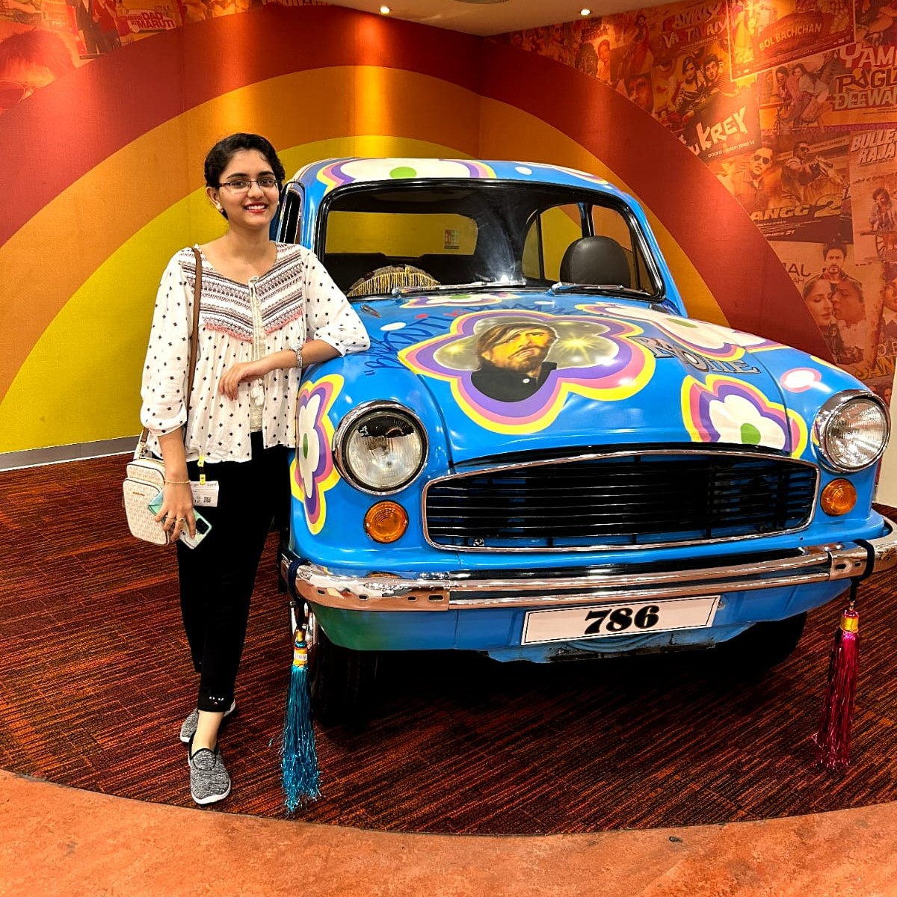
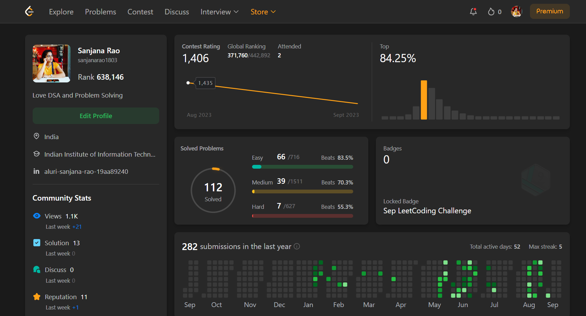

Hi, I am Sanjana and I am a passionate
"Perseverance and resourcefulness fuel my journey to spark meaningful change."

ABOUT ME
I'm a 3rd-year student pursuing my graduation in Bachelor of Technology at IIIT TRICHY (Indian Institute of Information Technology Trichy). I have a genuine passion for Data Structures and Algorithms (DSA) and relish the thrill of problem-solving. My journey in web development, specifically in frontend technologies, has equipped me with the skills to address real-life challenges.
Projects
Amazon Clone
Made clone of amazon website.
Technologies used : HTML , CSS , Bootstrap.
Simon says game
A web app where system chooses a random button and player has to press the sequence of buttons from the start.
Technologies used : HTML , CSS , JavaScript.
ToDo App
A javascript based web app , where u can add and delete your to-do tasks
Technologies used : HTML , CSS , JavaScript.
Skills
DATA STRUCTURES & ALGORITHMS
FRONTEND DEVELOPMENT (HTML, CSS, BOOTSTRAP, JAVASCRIPT)
C++
OBJECT-ORIENTED PROGRAMMING
COMPETITIVE PROGRAMMING
I've been honing my competitive coding and Data Structures and Algorithms (DSA) skills since 2022 . I am active on platforms like LeetCode and GeeksforGeeks. This experience has not only sharpened my problem-solving abilities but also provided practical insights into applying DSA concepts effectively.
I participated in many national and inter-college competitions.
